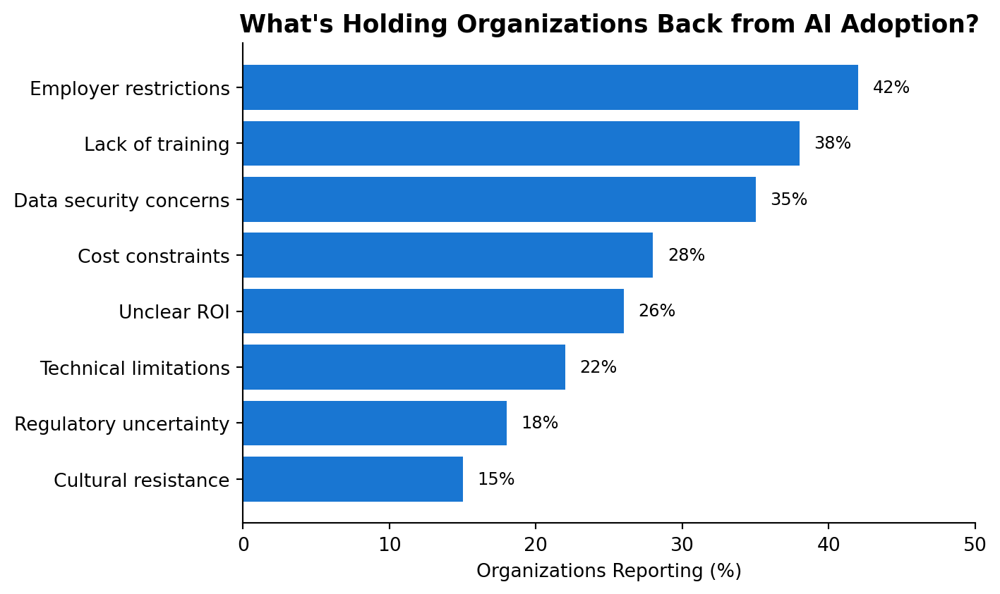
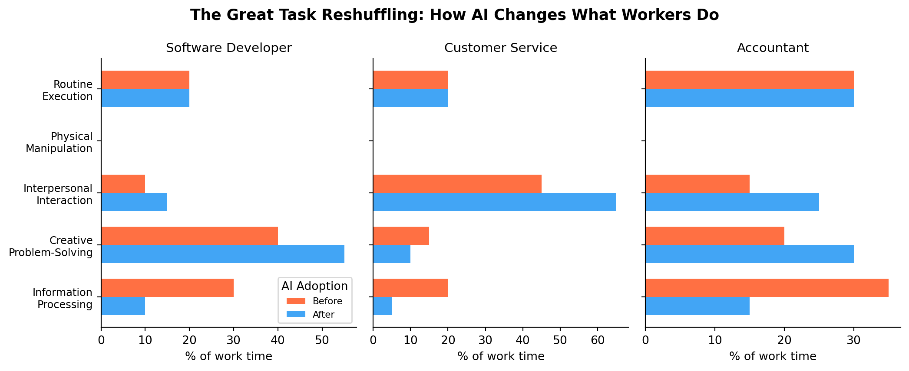

%%{init: {'theme':'neutral'}}%%
flowchart TD
A["Cheaper prediction over text and code"] --> B["Task-level automation and augmentation"]
B --> C["Individual productivity rises"]
B --> D["Task composition within jobs shifts"]
C --> E["Collective diversity can fall"]
D --> F["Labor demand: displacement vs reinstatement"]
F --> G["Heterogeneous wage and employment effects"]
E --> H["Policy: reward divergence and protect novelty"]
G --> I["Policy: retraining, safety nets, education"]
224 The Economics of Large Language Models: An Overview
How generative AI is reshaping work, creativity, productivity, and markets
225 The Economics of Large Language Models: An Overview
Large language models (LLMs) are the first information technology in decades that economists have been able to study almost in real time, from the moment of mass adoption. This chapter surveys what the first wave of rigorous empirical and theoretical research tells us about the economic consequences of generative AI: how it changes individual productivity and collective diversity, how it reshapes labor demand, who adopts it and how intensively, and how it alters the economics of prediction, data, and platforms. The goal is an integrated reference. We first build the conceptual and mathematical scaffolding that organizes the evidence, then review the empirical findings domain by domain, and finally return to the theory to interpret the long-run questions that remain open.
A persistent theme is that the same technology produces opposite-signed effects at different levels of analysis. Generative AI tends to raise the average quality of individual output while compressing its variance, to lift the productivity of lower-skilled workers more than higher-skilled ones, and to expand what a single person can produce while narrowing what a population of people collectively explores. Holding these tensions together, rather than collapsing them into a single optimistic or pessimistic story, is the central analytical task of the chapter.
225.1 Conceptual Foundations
Before reviewing evidence, we fix definitions and the small amount of formal machinery that makes the empirical results legible. The economics of AI is, at its core, a relabeling of classical questions in the economics of technology, so the right starting point is the vocabulary that labor and innovation economists already use.
225.1.1 Generative AI as a general-purpose technology
Definition (general-purpose technology). A general-purpose technology (GPT) is a technology that is pervasive across sectors, improves rapidly over time, and spawns complementary innovations in the sectors that adopt it. Steam power, electricity, and the integrated circuit are the canonical examples.
Generative AI fits this definition on all three counts. It is pervasive, because text and code are inputs to almost every occupation. It improves rapidly, because capability scales with compute and data along empirically regular curves. And it is innovation-spawning, because adopting it forces firms to redesign workflows, which is where most of the eventual value is realized. The GPT framing matters for one practical reason: GPTs historically deliver their measured productivity gains only after a lag, once organizations rebuild processes around them. This is the standard explanation for the “productivity paradox” we revisit in Section 228.4, and it cautions against reading early aggregate statistics as the ceiling of AI’s impact.
225.1.2 The task-based view of work
The most useful lens for AI and labor is the task-based model developed by Autor, Levy, and Murnane (2003) and formalized by Acemoglu and Restrepo (2018) and Acemoglu and Restrepo (2019). An occupation is not an atom; it is a bundle of tasks, and technology acts on tasks, not on job titles. This is why AI can transform an occupation, reweighting which tasks dominate, without eliminating it.
Definition (task-based production). Output \(Y\) is produced by combining a continuum of tasks indexed by \(i \in [0,1]\). Each task can be performed by labor or by capital (here, AI). Let \(N\) denote labor and \(K\) denote AI capital. Aggregate output takes the constant-returns form \[ Y \;=\; B \exp\!\left( \int_0^1 \ln y(i)\, di \right), \qquad y(i) \;=\; \alpha_K(i)\, k(i) \;+\; \alpha_L(i)\, \ell(i), \] where \(y(i)\) is the quantity of task \(i\), and \(\alpha_K(i), \alpha_L(i)\) are the productivities of AI and labor at that task.
A task is automated when AI becomes weakly more cost-effective than labor at performing it, that is, when \[ \frac{\alpha_K(i)}{R} \;\ge\; \frac{\alpha_L(i)}{W}, \] where \(R\) is the rental cost of AI capital (compute, licensing, integration) and \(W\) is the wage. Define the automation frontier \(I^*\) as the threshold task such that all tasks \(i < I^*\) are performed by AI and all tasks \(i \ge I^*\) remain with labor. As AI improves, \(\alpha_K(i)\) rises and the frontier \(I^*\) moves right, displacing labor from newly automated tasks. Korinek and Suh call the moving boundary the complexity frontier (Korinek and Suh 2024); it is the same object viewed from the perspective of task difficulty.
This model yields three results that recur throughout the empirical literature.
Comparative advantage, not absolute advantage, determines who keeps a task. A worker does not need to beat AI at a task in absolute terms to retain it. Labor keeps the tasks where its relative productivity \(\alpha_L(i)/\alpha_K(i)\) is highest. This is why even highly capable AI leaves substantial work for humans: people reallocate toward the tasks where the gap is smallest.
Displacement and reinstatement are distinct forces. Automation of tasks below \(I^*\) is a displacement effect that reduces labor demand. But the same productivity gains, plus capital accumulation, can create new tasks above the old frontier, a reinstatement effect that raises labor demand. Acemoglu and Restrepo (2019) show that wages and the labor share rise or fall depending on which force dominates. The “race” in Section 233.1 is precisely the race between these two.
Wage effects are heterogeneous within occupations. Because workers hold different task portfolios, reweighting tasks creates winners and losers inside the same job title, exactly the pattern Freund and Mann (2025) document empirically (Section 229.1.4).
225.1.3 A worked example: automation, augmentation, and net labor demand
The model is easier to trust once instantiated with numbers. Consider an occupation made of three equally weighted task groups: routine information processing (R), analysis and judgment (A), and client interaction (C). A worker’s value added per unit time on each group, before AI, is \(\alpha_L = (10, 10, 10)\). Suppose AI raises effective productivity on the tasks the worker still performs (augmentation) but also takes over a share of routine tasks outright (automation).
Concretely, let AI automate 70% of the routine group and augment the worker on the remainder, multiplying human productivity by \(1.5\) on routine, \(1.4\) on analysis, and \(1.1\) on interaction. Per unit of the worker’s time, human-performed output becomes \[ \underbrace{(1-0.7)\cdot 10 \cdot 1.5}_{\text{routine}=4.5} \;+\; \underbrace{10\cdot 1.4}_{\text{analysis}=14} \;+\; \underbrace{10\cdot 1.1}_{\text{interaction}=11} \;=\; 29.5, \] versus \(30\) before AI. The worker’s output per hour on retained tasks is essentially unchanged, but the composition has shifted decisively away from routine work toward analysis and interaction. Whether headcount rises or falls now depends on demand elasticity. If the cheaper, faster service expands the market enough, the firm hires more of these workers (reinstatement dominates); if demand is inelastic, the same output needs fewer workers (displacement dominates). This single example reproduces, in miniature, why the empirical labor-market findings in Chapter 229 are mixed and context-dependent rather than uniformly negative: the sign of the employment effect is not a property of the technology alone but of the technology interacted with demand.
225.1.4 Automation versus augmentation
Definition (automation vs augmentation). AI automates a task when it performs the task in place of a human (capital substitutes for labor at that task). AI augments a worker when it raises the worker’s productivity at a task the worker still performs (capital complements labor). The same tool can do both, on different tasks, within the same job.
The distinction is not merely descriptive: it predicts the sign of the employment effect. Augmentation raises the marginal product of labor and tends to support or increase employment and wages; automation lowers labor demand for the affected tasks. The empirical regularity that AI helps lower-skilled workers most (Section 228.2.1) follows naturally, since novices spend a larger share of time on exactly the routine tasks where AI augmentation is largest and the quality gap to experts is widest.
225.1.5 AI as a reduction in the cost of prediction
A complementary framing, due to Agrawal, Gans, and Goldfarb, treats machine learning as a sharp drop in the cost of prediction. When the price of a fundamental input falls, three things happen: we use more of it, we use more of its complements, and we substitute away from things it replaces. The complements to cheap prediction are data (the input) and judgment (deciding what to predict and what to do with the prediction). This reframes many business problems as prediction problems: inventory management becomes demand prediction, lending becomes default prediction, and recruiting becomes performance prediction. The policy and organizational implications, including the unbundling of prediction from judgment, are developed in Section 241.1, and the policy reconsideration this forces is surveyed by Agrawal, Gans, and Goldfarb (2019).
LLMs extend this logic from numeric prediction to prediction over language and code, which is why their reach is so broad: almost every knowledge task contains a next-token-prediction subproblem somewhere inside it.
225.2 The Dawn of a New Economic Era
In November 2022, a seemingly simple chatbot named ChatGPT was released to the public. Within five days, it had attracted a million users. Within two months, it reached 100 million. By July 2025, approximately 10% of the world’s adult population, nearly 800 million people, had become active users (Chatterji et al. 2025). This explosive adoption represents not just another technology trend, but potentially the most rapid technological transformation in human history.
The speed of this transformation dwarfs previous technological revolutions. Where the personal computer took decades to reshape the workplace, and the internet required years of infrastructure development before achieving mainstream adoption, generative artificial intelligence has infiltrated offices, creative studios, and production floors with unprecedented velocity. As Bick, Blandin, and Deming (2024) document, work adoption of generative AI has matched the pace of personal computer adoption, while overall adoption has exceeded both PCs and the internet when measured from their first mass-market product launches.
Yet this is not merely a story of rapid adoption. It is a tale of fundamental transformation: one that is simultaneously enhancing human creativity while homogenizing it, dramatically boosting individual productivity while threatening entire categories of work, and creating opportunities for some while closing doors for others. The paradoxes embedded in this transformation demand careful examination, for they will shape not just our economic future, but the very nature of human work and creativity.
This chapter tells that story through the lens of rigorous empirical research, drawing on evidence from millions of workers, hundreds of thousands of firms, and dozens of controlled experiments conducted in the first three years of the generative AI revolution. What emerges is a complex portrait of technological change that defies simple narratives of either utopian enhancement or dystopian replacement.
226 The Questions That Matter
As we stand at this inflection point, several critical questions emerge:
The Creativity Question: Does AI enhance human creativity, or does it lead to a troubling convergence of ideas and expressions?
The Productivity Question: How much more productive can humans become when augmented by AI, and who captures these gains?
The Employment Question: Will AI complement or substitute for human workers, and how will this vary across different types of work?
The Inequality Question: Does AI level the playing field by helping lower-skilled workers catch up, or does it create new forms of digital divides?
The Adoption Question: Who is using these tools, how intensively, and what determines the pace and pattern of adoption?
This chapter systematically addresses each of these questions, building a picture of AI’s multifaceted impact on the modern economy.
226.1 Part I: The Creativity Paradox
226.1.1 The Dual Nature of AI-Enhanced Creativity
The impact of generative AI on human creativity presents us with our first paradox. In a carefully controlled experiment, Doshi and Hauser (2024) asked writers to craft short stories, with some receiving AI-generated ideas as inspiration. The results were striking: stories written with AI assistance were judged to be more creative, better written, and more enjoyable to read. The effect was particularly pronounced for writers who scored lower on baseline creativity measures, AI appeared to be democratizing creative excellence.
But there was a catch. When the researchers analyzed the similarity between stories, they discovered something troubling: AI-assisted stories were significantly more similar to each other than stories written by humans alone. The technology that made individual writers more creative was simultaneously making collective creativity more homogeneous.
This finding illuminates a fundamental tension in the age of AI. As Doshi and Hauser (2024) frame it, we face a social dilemma: writers are individually better off using AI, but collectively, society produces a narrower scope of novel content. It’s as if AI provides everyone with a more powerful creative engine, but all the engines are manufactured in the same factory, running on the same fuel, producing variations on the same underlying patterns.
226.1.2 The Homogenization Effect: A Deeper Look
To understand why this homogenization occurs, we must consider how generative AI works. These systems are trained on vast corpora of existing human creative works, learning patterns, styles, and structures that appear most frequently in their training data. When humans use AI for creative assistance, they’re essentially tapping into a statistical distillation of past human creativity. The AI suggests ideas that are, by design, probable given what has come before.
This creates what we might call a “creative gravity well”, AI suggestions pull human creators toward the center of the distribution of existing ideas rather than pushing them toward the edges, where true innovation occurs. The most creative individuals, who might naturally gravitate toward unusual or unprecedented ideas, find themselves gently guided back toward the mainstream. Meanwhile, less naturally creative individuals are lifted up toward this same center point, improving their individual output but contributing to an overall convergence (Figure Figure 226.1).
This is no longer just a plausible mechanism inferred from one creative-writing study. Jiang et al. (2025) (NeurIPS 2025 Best Paper) name the effect the Artificial Hivemind and measure it directly at scale, independent of any specific creative task. They build Infinity-Chat, a benchmark of 26,000 real-world, open-ended queries that by construction admit many equally valid answers (no single ground truth), together with 31,250 human judgments (25 independent annotations per example) to establish what a healthy spread of good answers actually looks like. Two distinct failure modes emerge. Intra-model repetition: a single model asked the same open-ended question multiple times (at typical sampling temperatures) returns answers that cluster far more tightly than the space of genuinely good answers would allow, the model’s own generations pull toward the center of its own distribution. Inter-model homogeneity: different model families, trained by different labs on different data, nonetheless converge toward strikingly similar answers to the same open-ended prompt, a pattern the single-model, single-lab framing of the “creative gravity well” cannot fully explain. Both failure modes point to the same underlying force: likelihood-maximizing training (pretraining, then instruction tuning and RLHF, which further sharpens a model toward whatever raters found most acceptable) systematically discounts a correct but unusual answer relative to a typical one, and does so in a training-data-driven way that different labs, using overlapping web-scale corpora and similar alignment recipes, end up reproducing in common. The economic reading is direct: as AI-assisted output captures a larger share of the visible text, image, and code that future models and future human creators draw on, the “gravity well” is not merely a per-writer effect but a compounding, population-level one, each generation of tools trained partly on the last generation’s homogenized output has a narrower distribution to pull toward.
%%{init: {'theme':'neutral'}}%%
flowchart TD
A["Human Creators"] --> B{"Without AI"}
B --> C["Wide Distribution of Creative Output"]
C --> D["High Variance, Low Average Quality"]
A --> E{"With AI"}
E --> F["AI Suggestions"]
F --> G["Convergence Toward Statistical Center"]
G --> H["Low Variance, High Average Quality"]
style C fill:#e1f5fe
style D fill:#e1f5fe
style G fill:#fff3e0
style H fill:#fff3e0
226.1.3 The Advertising Revolution and Consumer Perception
Yet perhaps the most revealing test of AI’s creative paradox comes not from artistic domains but from commercial ones. In advertising, where creativity is explicitly measured against concrete outcomes (e.g., engagement, recall, purchase intent), we can examine whether the quality improvements and homogenization effects observed in the creative industries hold true. Moreover, advertising offers a unique lens: consumers encounter AI-generated creative work, and their reactions reveal something crucial about whether the creative convergence problem is merely academic or fundamentally matters in the real world.
Hartmann, Exner, and Domdey (2025) conducted pioneering experiments systematically comparing AI-generated to human-made marketing images across critical dimensions. Using state-of-the-art generative text-to-image models, they created synthetic marketing images based on real-world human-made examples. Their findings were striking: human evaluators rated AI-generated marketing imagery as superior to human-made images in quality, realism, and aesthetics. When given identical creative briefings, AI models also excelled in ad creativity, ad attitudes, and prompt following compared to commissioned human freelancers. Most tellingly, a field study with over 100,000 impressions demonstrated that AI-generated banner ads achieved up to 50% higher click-through rates than professional human-made stock photography. These results suggest that generative AI can enable advertisers to produce marketing content not only faster and orders of magnitude cheaper, but also at superhuman effectiveness levels.
226.2 Implications for Creative Industries
The creativity paradox has profound implications for industries built on novelty and differentiation. Consider the publishing industry, where the discovery of fresh voices and perspectives has traditionally been a key value proposition. If AI assistance leads to a convergence of writing styles and story structures, publishers may find it increasingly difficult to identify truly distinctive work. The slush pile may become more professionally written but less varied, making the discovery of breakout talent paradoxically harder.
Similarly, in advertising and marketing, where differentiation is paramount, the widespread adoption of AI tools could lead to a troubling sameness in campaigns and messaging. While each individual campaign might be more polished and effective than before, the collective impact might be a marketplace of ideas that feels increasingly homogeneous.
This paradox suggests that as AI tools become more prevalent, the ability to deliberately diverge from AI suggestions, to recognize and resist the pull of the statistical center, may become a crucial creative skill. Organizations may need to develop new practices and metrics to ensure they’re not just optimizing for immediate quality improvements but also preserving the diversity and novelty that drive long-term innovation.
227 Part II: The Productivity Revolution
228 Engaging Customers with AI in Online Chats: Evidence from a Randomized Field Experiment
Published Online:1 Oct 2025https://doi.org/10.1287/mnsc.2022.03920
228.1 Abstract
We examine how artificial intelligence (AI) affected the productivity of customer service agents and customer sentiment in online interactions. Collaborating with a meal delivery company, we conducted a randomized field experiment that exploited exogenous variation in giving agents access to AI-generated suggestions. We found that AI improved both the efficiency and effectiveness of the interactions: AI-assisted agents responded faster, engaged customers more deeply, and achieved greater improvements in customer sentiment. The benefits were most pronounced for less-experienced agents. However, AI’s impact varied by conversation type: It improved efficiency and customer sentiment in subscription cancellation requests but was the least effective in repeat complaint scenarios because of systemic issues beyond the AI’s capability. A text analysis of agent messages suggests that improved customer sentiment was explained by AI-assisted agents exhibiting higher levels of key response characteristics: empathy, information, and solution. Furthermore, we exploit a unique data feature: Customers first chatted with an automated chatbot without any human intervention before they were transferred to human agents (who may or may not have had AI assistance). We found that if customers who had experienced chatbot comprehension failures were then connected to AI-assisted human agents, the involvement of AI negatively affected customer sentiment. This is because unusually rapid responses in the latter scenario led customers to believe they were still communicating with a chatbot only, suggesting a spillover from their initial negative chatbot experiences. Companies should understand the conversation contexts, such as customer intent and chatbot interactions, when integrating AI into their customer support strategies.
228.2 The Magnitude of Productivity Gains
While the impact on creativity presents us with paradoxes, the effect on productivity appears more straightforwardly positive, at least at first glance. The numbers are striking: Brynjolfsson, Li, and Raymond (2025) found that customer support agents with access to AI assistance resolved 15% more issues per hour on average. Peng et al. (2023) documented that software developers with AI pair programmers completed coding tasks 55.8% faster. Jung Ho Choi and Xie (2025) observed that accountants using AI increased their weekly client support by up to 59% when comparing highest to lowest usage levels.
These are not marginal improvements. They represent potentially transformative gains in human productivity, comparable to or exceeding those achieved by previous general-purpose technologies. To put this in perspective, the introduction of the assembly line in manufacturing typically improved productivity by 20-30% (Karim, Tuan, and Emrul Kays 2016). The personal computer revolution of the 1980s and 1990s generated annual productivity growth of about 1-2% (Dedrick, Gurbaxani, and Kraemer 2003). The productivity gains from AI appear to be arriving faster and at a larger magnitude than these previous technological revolutions.
228.2.1 The Heterogeneity of Impact
But these aggregate numbers mask enormous variation in who benefits and by how much. One of the most consistent findings across studies is that AI tends to help lower-skilled workers more than higher-skilled ones. Brynjolfsson, Li, and Raymond (2025) found that novice customer service workers improved while experienced workers saw minimal gains. Noy and Zhang (2023) documented similar patterns among professional writers, with weaker performers benefiting most from ChatGPT assistance.
This pattern suggests that AI might serve as a “great equalizer” in the workplace, reducing skill-based inequality by bringing lower performers closer to the productivity levels of top performers. However, this interpretation requires nuance, as we’ll explore in the discussion of labor market effects.
228.3 The Mechanisms of Productivity Enhancement
To understand how AI generates these productivity gains, researchers have identified several key mechanisms:
228.3.1 Knowledge Dissemination
Brynjolfsson, Li, and Raymond (2025) provide evidence that AI systems effectively capture and disseminate the best practices of high-performing workers. The AI learns from patterns in successful interactions and then guides less experienced workers toward these proven approaches. It’s as if every worker suddenly has access to a mentor who has absorbed the collective wisdom of the organization’s best performers.
228.3.2 Cognitive Offloading
Hoffmann et al. (2025) document how AI enables software developers to shift their attention from routine coding tasks to higher-level design and problem-solving. By handling boilerplate code generation and routine debugging, AI frees up cognitive resources for more complex and creative tasks. This represents a fundamental shift in how knowledge work is performed, from doing the work to directing and refining AI’s output.
228.3.3 Time Reallocation
Dillon et al. (2025) found that workers with AI access spent two fewer hours per week on email and reduced their time working outside regular hours. This suggests that AI doesn’t just make workers faster at existing tasks but enables them to reallocate time toward higher-value activities or achieve better work-life balance (Figure Figure 228.1).
%%{init: {'theme':'neutral'}}%%
graph LR
A["Traditional Work Process"] --> B["Manual Task Execution"]
B --> C["Quality Checking"]
C --> D["Iteration and Refinement"]
D --> E["Final Output"]
F["AI-Augmented Process"] --> G["Task Delegation to AI"]
G --> H["Rapid Iteration"]
H --> I["Human Oversight and Direction"]
I --> J["Enhanced Output"]
style A fill:#ffebee
style F fill:#e8f5e9
K["Time Saved"] --> L["Reallocation"]
L --> M["Strategic Thinking"]
L --> N["Relationship Building"]
L --> O["Learning and Development"]
L --> P["Work-Life Balance"]
style K fill:#fff9c4
228.4 The Productivity Paradox of Our Time
Despite these impressive gains at the individual level, Dillon et al. (2025) raise an important question: why don’t we see larger shifts in aggregate productivity statistics? They found that while individual workers saved significant time, there were no detectable changes in the overall quantity or composition of tasks being completed at the organizational level.
This recalls the famous “productivity paradox” of the computer age, when Robert Solow quipped in 1987 that “you can see the computer age everywhere but in the productivity statistics.” Several explanations may apply to the current AI revolution:
228.4.1 The Adjustment Period Hypothesis
Organizations may need time to restructure their processes to fully capture AI’s benefits. Current productivity gains might be absorbed by organizational slack rather than translating into increased output or reduced employment.
228.4.2 The Quality vs. Quantity Trade-off
Organizations might be using AI-generated time savings to improve quality rather than increase quantity. Jung Ho Choi and Xie (2025) found that AI use in accounting led to more granular financial reporting and faster monthly closes, improvements in quality and timeliness rather than volume.
228.4.3 The Complementary Investment Challenge
Realizing AI’s full potential may require complementary investments in training, process redesign, and organizational restructuring that take time to implement. The productivity gains we observe now might be just the tip of the iceberg.
228.5 Sectoral Variations in Productivity Impact
The impact of AI on productivity varies dramatically across sectors and types of work. Based on the research, we can construct a taxonomy of AI’s differential impact (Table Table 228.1).
| Sector | Task Type | Productivity Gain | Reference |
|---|---|---|---|
| Software Development | Code generation | 10-56% | Cui et al. (2025) Peng et al. (2023) Becker et al. (2025) |
| Customer Service | Query resolution | 14-15% | Brynjolfsson, Li, and Raymond (2025) Susanto and Khaq (2024) |
| Accounting | Data processing | 18-59% | Jung Ho Choi and Xie (2025) |
| R&D | Drug discovery | 5-6% per AI unit | Wu, Yuan, and Song (2025) Kanakia et al. (2025) |
These variations reflect differences in task complexity, the availability of training data, regulatory constraints, and organizational readiness for AI adoption.
229 Part III: The Great Labor Market Transformation
229.1 The Employment Equation
Perhaps no question about AI generates more anxiety than its impact on employment. Will AI be a job destroyer or a job transformer? The emerging evidence suggests the answer is both, and neither, it depends critically on the specific occupation, the nature of tasks involved, and the time horizon we consider.
229.1.1 The Junior Worker Crisis
One of the most concerning findings comes from Lichtinger and Hosseini Maasoum (2025) and Brynjolfsson, Chandar, and Chen (2025), who document sharp declines in employment for junior workers in AI-exposed occupations. Early-career workers (ages 22-25) experienced 16% relative employment declines, while employment for experienced workers remained stable. This pattern appears consistently across multiple studies and datasets.
The mechanism is intuitive but troubling: AI can now perform many of the routine tasks that traditionally served as training grounds for junior employees. When AI can draft the first version of a report, compile basic research, or generate initial code, the traditional apprenticeship model of professional development is disrupted. Senior workers benefit from AI augmentation, but juniors lose their traditional entry points into careers.
229.1.2 The Automation vs. Augmentation Divide
Brynjolfsson, Chandar, and Chen (2025) identify a crucial distinction: the employment effects depend heavily on whether AI automates or augments human labor in specific occupations. In roles where AI primarily augments human capabilities, enhancing decision-making, providing information, or accelerating creation, employment effects are minimal or even positive. But in roles where AI can fully automate tasks, employment declines are substantial.
This distinction maps onto different types of work:
Augmentation-Dominant Occupations:
Strategic consultants (AI provides analysis)
Senior software architects (AI implements designs)
Medical specialists (AI assists diagnosis)
Creative directors (AI executes visions)
Automation-Dominant Occupations:
Data entry clerks
Basic customer service representatives
Junior legal researchers
Content moderators
229.1.3 From Copilot to Agent: Work Shifts from Implementation to Supervision
The augmentation-versus-automation split above was drawn from evidence about copilot-style AI, a tool that suggests and the human executes. Agentic AI, where the system can itself take multi-step action rather than only suggest the next line, is not merely a stronger copilot; it changes which tasks the human retains within an augmentation-dominant occupation, not just whether the occupation as a whole is augmented or automated. Sarkar (2026) provides some of the first large-sample evidence of this shift, using workflow logs from Cursor, a widely used AI-native coding platform, to observe how professional software engineers actually reallocate their time once coding agents (not just autocomplete) become available.
The central finding is a within-occupation task recomposition, not a headcount change: after agents are introduced, workers become measurably less likely to produce output manually and measurably more likely to delegate implementation to an agent. The time freed up is not idle, it flows into what the paper calls higher-order work, tasks about the work rather than the work itself: delegation (deciding what to hand to an agent and how to specify it), context-gathering (assembling the information an agent needs to succeed), and planning (sequencing a larger task into agent-sized pieces and checking the results). This is a sharper, occupation-internal version of the task-based automation frontier of Section 225.1.2: the frontier \(I^*\) does not just move for the occupation as a whole, it moves within a single worker’s task portfolio, and the tasks that remain human are systematically the ones requiring judgment about what to delegate and how to verify what came back.
Two heterogeneity results sharpen the picture. First, the shift toward higher-order work is largest for verifiable work, tasks with a checkable outcome (tests pass, a diff compiles, output matches a spec), which is exactly the condition under which delegating to an agent and then checking its output is cheap relative to doing the work oneself; this echoes the same “checkable answer” condition that makes reinforcement learning with verifiable rewards effective for training reasoning models (Section 240.10 in the reasoning-models chapter identifies the identical condition from the model-training side). Second, the effect is largest for expert workers, not novices, the opposite of the “AI most helps the least skilled” finding common in the copilot-productivity literature (Section 228.2.1). A plausible reconciliation is that supervising an agent well, judging whether its plan is sound before execution, catching a subtly wrong implementation, is itself a skill that benefits from the same expertise that makes someone good at the underlying task; novices can be augmented by suggestions they can locally verify, but effectively delegating and auditing multi-step agentic work draws on judgment that is harder to substitute.
229.1.4 The Task Recomposition Effect
Freund and Mann (2025) provide a deeper view through their concept of “job transformation.” They show that even within occupations experiencing overall employment declines, the effects are highly heterogeneous based on workers’ specific skill portfolios. Workers specialized in information-processing tasks tend to leave and suffer wage losses, while those specialized in customer-facing and coordination tasks experience wage gains as work rebalances toward their strengths.
This suggests that AI doesn’t simply eliminate jobs but fundamentally reconstructs them, changing the relative importance of different skills and tasks within occupations.
229.2 The Geography of Disruption
The labor market impacts of AI are not uniformly distributed across regions or countries. Klein Teeselink (2025) document significant variations in how different labor markets are affected:
229.3 The High-Wage Paradox
Contrary to many predictions, Klein Teeselink (2025) analysis of firm-level responses to LLM exposure reveals a more complicated employment picture than simple automation narratives suggest.
229.3.1 Employment Effects Remain Modest
Examining firms across exposure quartiles, they find that LLM exposure produces minimal overall employment effects:
Total employee counts show near-zero changes across all exposure bins
Both low-seniority and high-seniority headcounts remain largely unaffected
229.3.2 The Composition Shift: Favoring Seniority
The most robust finding concerns workforce composition rather than total headcount:
Firms with higher LLM exposure modestly reduce their share of low-seniority workers
This pattern suggests firms are not laying off workers wholesale, but rather shifting toward more experienced staff
229.3.3 Reconsidering the Wage-Based Differential Impact
Thus, the “high-wage paradox” narrative requires qualification. Rather than observing pronounced employment losses concentrated in high-wage segments, firms made subtle compositional adjustments, which favored seniority over headcount reductions. This may reflect strategic upskilling in response to AI exposure rather than displacement-driven layoffs in premium labor segments.
The mechanisms underlying these seniority shifts warrant further investigation, as they point to labor market adjustment occurring through workforce composition rather than employment elimination.
229.3.4 International Variations
Different countries are experiencing AI’s labor market impact at different rates and intensities. Souza (2025) studying Brazil’s unique software registry, found that AI affects administrative and production workers differently depending on the specific implementation context. In manufacturing settings, AI actually increased employment of low-skilled workers by making machinery easier to operate, a finding that contrasts sharply with patterns observed in service sectors.
229.4 The Skills That Matter in the AI Age
As AI reshapes the labor market, certain skills are becoming more valuable while others depreciate rapidly. Research points to several key competencies that determine success in the AI-augmented workplace:
229.4.1 Meta-Learning and Adaptability
Hyman et al. (2025) found that 25-40% of workers in AI-exposed occupations can successfully retrain for AI-intensive work, but success depends heavily on workers’ ability to learn new skills quickly. The half-life of specific technical skills is shrinking, making the ability to learn continuously more valuable than any particular skill set.
229.4.2 Human-AI Collaboration Skills
Caplin et al. (2025) demonstrate that workers’ ability to calibrate their use of AI, knowing when to rely on it and when to override it, significantly affects their productivity gains. Workers who blindly follow AI recommendations perform worse than those who thoughtfully integrate AI suggestions with their own judgment.
229.4.3 Complex Reasoning and Problem-Solving
Dominski and Lee (2025) find that occupations requiring complex reasoning and problem-solving are experiencing larger employment declines in the short term but may be better positioned for the long term. These roles are being transformed rather than eliminated, with workers needing to operate at a higher level of abstraction.
230 Part IV: The Adoption Dynamics
230.1 Who Uses AI and How
Understanding AI adoption patterns is crucial for predicting its long-term impacts. The research reveals a complex picture of adoption that defies simple demographics.
230.1.1 The Demographic Patterns
Humlum and Vestergaard (2024) surveyed 100,000 workers across 11 exposed occupations in Denmark, finding that half had already used ChatGPT by early 2024. The early adopters fit a specific profile: younger, less experienced, higher-achieving, and predominantly male. However, Chatterji et al. (2025) document that these gaps are rapidly narrowing. The gender gap in adoption has decreased dramatically, and usage is growing faster in lower-income countries than in wealthy ones.
The table below is a schematic illustration of the qualitative patterns reported across adoption surveys (younger, more educated, and higher-income groups adopt earlier and use AI more intensively). The cell values are stylized for exposition and should not be read as point estimates from any single study.
Table 4.1: Stylized AI Adoption Patterns by Demographic Group (illustrative)
| Demographic | Adoption Rate | Daily Use Rate | Primary Use Case |
|---|---|---|---|
| Age | |||
| 18-25 | 68% | 18% | Learning & skill development |
| 26-35 | 52% | 14% | Work productivity |
| 36-45 | 41% | 9% | Work productivity |
| 46-55 | 28% | 5% | Information gathering |
| 56+ | 15% | 2% | Personal assistance |
| Gender | |||
| Male | 47% | 11% | Technical tasks |
| Female | 38% | 8% | Communication & writing |
| Education | |||
| High school | 31% | 5% | Personal use |
| Bachelor’s | 48% | 10% | Mixed use |
| Graduate | 62% | 15% | Professional use |
| Income Quartile | |||
| Top 25% | 58% | 16% | Complex work tasks |
| 50-75% | 45% | 10% | Standard work tasks |
| 25-50% | 35% | 6% | Mixed use |
| Bottom 25% | 28% | 4% | Personal/learning |
Illustrative values, stylized for exposition. For reported adoption figures see Humlum and Vestergaard (2024), Chatterji et al. (2025), and Bick, Blandin, and Deming (2024).
230.1.2 The Intensity Gradient
Daniotti et al. (2025) reveal that intensity of use, not just adoption, drives productivity gains. By December 2024, they estimate that AI wrote 30.1% of Python functions from U.S. contributors on GitHub. But this average masks enormous variation: some developers use AI for nearly all their coding, while others use it sparingly or not at all.
The intensity of use follows predictable patterns:
- New developers use AI more intensively than veterans
- Developers working on routine tasks use AI more than those on novel problems
- Time-pressed developers rely on AI more heavily
- Developers in certain languages (Python, JavaScript) use AI more than others (C++, Rust)
230.1.3 The Organizational Context
Humlum and Vestergaard (2024) identify organizational factors as major determinants of adoption. Workers report that employer restrictions and lack of training are primary barriers to AI use. This creates a paradox: organizations that could benefit most from AI (those with routine, standardizable work) are often the most restrictive in allowing its use.

Figure 4.1: The Organizational Barriers to AI Transformation
230.2 The Evolution of Use Cases
Chatterji et al. (2025) provide fascinating insights into how AI is actually being used. By analyzing ChatGPT conversations, they identify three dominant use categories that account for nearly 80% of all usage:
- Practical Guidance (35%): How-to instructions, problem-solving, technical support
- Information Seeking (28%): Research, fact-finding, learning
- Writing Assistance (17%): Drafting, editing, translation
Notably, coding, despite receiving significant attention, represents less than 5% of overall usage. This suggests that AI’s impact extends far beyond technical domains.
230.2.1 The Work vs. Personal Divide
A surprising finding from Chatterji et al. (2025) is that non-work usage has grown faster than work usage, rising from 53% to over 70% of all ChatGPT conversations. This suggests that AI is becoming embedded in daily life, not just professional contexts. People use AI for:
- Planning travel and events
- Health and wellness advice
- Educational support for children
- Creative hobbies and entertainment
- Personal finance decisions
This broad adoption pattern indicates that AI literacy is being developed outside formal workplace training, potentially accelerating overall adoption rates.
230.3 The Innovation and Learning Effects
Daniotti et al. (2025) document an unexpected benefit of AI adoption: it promotes learning and innovation. Developers using AI show increased exploration of new libraries and programming techniques. Rather than making developers lazy or dependent, AI appears to expand their horizons by lowering the barriers to trying new approaches.
230.3.1 The Exploration Amplification
When developers use AI, they:
- Try 23% more unique libraries
- Experiment with 31% more library combinations
- Contribute to 18% more diverse projects
- Learn new programming languages 40% faster
This suggests that AI doesn’t just make existing work faster but enables qualitatively different work patterns.
The following table is illustrative. It conveys the direction of the “learning dividend” documented by Daniotti et al. (2025) (more libraries tried, faster prototyping, modest reductions in documented bugs); the specific numbers are stylized rather than reported coefficients.
Table 4.2: The Learning Dividend of AI Use (illustrative)
| Metric | Without AI | With AI | Percentage Change |
|---|---|---|---|
| New libraries tried per month | 2.3 | 2.8 | +22% |
| Unique library combinations | 5.1 | 6.7 | +31% |
| Languages used actively | 1.8 | 2.2 | +22% |
| Documentation consulted | 15 pages | 8 pages | -47% |
| Time to working prototype | 4.2 days | 2.1 days | -50% |
| Bugs per 1000 lines of code | 12.3 | 10.1 | -18% |
Illustrative values consistent with the qualitative findings of Daniotti et al. (2025); not reported point estimates.
231 Part V: The R&D and Innovation Transformation
231.1 AI’s Impact on Research Productivity
The impact of AI on research and development presents unique patterns distinct from other domains. Wu, Yuan, and Song (2025) focus on the pharmaceutical industry, where AI adoption in drug discovery has been particularly intensive. They find that AI significantly boosts new drug R&D productivity, with each unit increase in AI adoption raising new drug output per billion yuan invested by 0.05-0.06.
231.1.1 The R&D Elitism Effect
One unexpected finding is what Wu, Yuan, and Song (2025) call “R&D elitism”, AI adoption leads to a concentration of research activities among core, highly skilled researchers. Organizations using AI intensively tend to:
- Reduce the total size of R&D teams
- Increase the proportion of PhD-level researchers
- Focus on fewer, higher-impact projects
- Achieve better outcomes with smaller teams
This pattern suggests that AI makes marginal researchers less valuable while amplifying the productivity of top talent, a dynamic that could reshape the entire research enterprise.
%%{init: {'theme':'neutral'}}%%
graph LR
A["Traditional R and D Model"] --> B["Large Teams"]
B --> C["Hierarchical Structure"]
C --> D["Slow Iteration"]
D --> E["High Failure Rate"]
F["AI-Augmented R and D"] --> G["Small Elite Teams"]
G --> H["Flat Structure"]
H --> I["Rapid Iteration"]
I --> J["Higher Success Rate"]
K["Key Changes"]
K --> L["Automated Literature Review"]
K --> M["AI Hypothesis Generation"]
K --> N["Simulated Experiments"]
K --> O["Predictive Modeling"]
style A fill:#ffebee
style F fill:#e8f5e9
style K fill:#e3f2fd
Figure 5.1: The Transformation of R&D Organization Structure
231.2 The Geography of AI Innovation
Daniotti et al. (2025) reveal striking geographical disparities in AI adoption for software development. By December 2024, AI was writing:
- 30.1% of Python functions from U.S. contributors
- 24.3% from Germany
- 23.2% from France
- 21.6% from India
- 15.4% from Russia
- 11.7% from China
These disparities reflect differences in:
- Access to AI tools (some are restricted in certain countries)
- Language barriers (most AI tools perform better in English)
- Regulatory environments
- Cultural attitudes toward AI adoption
- Economic incentives for productivity improvement
The concentration of AI use in certain countries could lead to widening gaps in innovation capacity and economic competitiveness.
232 Part VI: The Accounting and Finance Revolution
232.1 The Transformation of Professional Services
Jung Ho Choi and Xie (2025) provide detailed evidence from the accounting sector, where AI adoption is fundamentally changing how professional services are delivered. Their study of 79 small and medium-sized enterprises using AI-based accounting software reveals:
- 18% increase in weekly client support per standard deviation of AI use
- 59% productivity gain when comparing highest to lowest usage levels
- 9% reallocation of accountant time from routine data entry to high-value tasks
- 12% increase in ledger granularity (improved reporting quality)
- 7.5-day reduction in monthly closing time
232.1.1 The Quality-Quantity Trade-off in Professional Services
Unlike in creative fields where AI may reduce diversity, in accounting AI appears to improve both efficiency and quality. AI-assisted accountants produce more detailed, accurate, and timely financial reports. However, Jung Ho Choi and Xie (2025) also document risks: accountants sometimes over-rely on AI-suggested classifications, accepting incorrect recommendations when AI confidence scores are actually low.
This highlights a crucial challenge in professional services: maintaining professional skepticism and judgment while leveraging AI’s capabilities.
Table 5.1: AI Impact on Accounting Task Performance (illustrative)
The figures below are stylized to show the typical pattern (large time savings on routine data work, smaller accuracy gains, time reallocated toward advisory work). For the reported estimates see Jung Ho Choi and Xie (2025).
| Task Category | Time Reduction | Accuracy Change | Client Satisfaction |
|---|---|---|---|
| Data entry | -72% | +15% | No change |
| Reconciliation | -45% | +22% | +18% |
| Report generation | -38% | +8% | +25% |
| Tax preparation | -31% | +12% | +20% |
| Audit procedures | -25% | +5% | +15% |
| Advisory services | +15% | N/A | +35% |
Note: Positive time values for advisory services indicate increased time allocation
233 Part VII: Theoretical Frameworks for Understanding AI Impact
233.1 The Race Between Automation and Capital Accumulation
Korinek and Suh (2024) provide a theoretical framework for understanding AI’s long-term impact on wages and employment. They model the economy as a race between two forces:
- Automation: Making human labor less necessary
- Capital Accumulation: Creating new opportunities for human work
The outcome depends on their relative speeds. If automation proceeds slowly enough, capital accumulation can create new tasks and maintain demand for human labor. But if automation accelerates, particularly if we achieve Artificial General Intelligence (AGI), wages could collapse.
233.1.1 The Complexity Frontier
Korinek and Suh introduce the concept of a “complexity frontier”, the boundary between tasks that can and cannot be automated at any given point. As AI advances, this frontier moves to encompass increasingly complex tasks. The key questions are:
- Is there an upper bound to task complexity that humans can perform?
- How quickly is the frontier advancing?
- Can humans adapt fast enough to stay ahead of the frontier?
The current evidence suggests we’re in a race where the frontier is advancing rapidly but unevenly across different domains.
233.2 The Task-Based Model of AI Impact
Freund and Mann (2025) develop a granular model where occupations are bundles of tasks and workers have heterogeneous task-specific skills. This framework helps explain why AI’s impact varies so much across workers within the same occupation.
Key insights from this model:
Comparative Advantage Matters: Workers don’t need to be better than AI at a task to retain value; they need to be relatively better at that task compared to other tasks.
Task Reweighting Creates Winners and Losers: As AI changes the relative importance of tasks within occupations, workers specialized in growing tasks gain while those specialized in shrinking tasks lose.
Selection Effects Amplify Inequality: Workers who can’t adapt to new task compositions leave, changing the composition of who remains in each occupation.

Figure 7.1: The Fundamental Restructuring of Work Tasks
233.3 Long-Run Growth Forecasts: Why Economists and AI Insiders Disagree by an Order of Magnitude
Everything so far in this chapter is about effects already visible in data: adoption rates, task recomposition, wage and employment shifts measured over months or a few years. A different, harder question is what AI does to the economy’s long-run growth rate, and here the range of credible expert opinion is not a modest confidence interval but a chasm. Cunningham (2025) compiles 33 quantitative forecasts of AI’s effect on annual economic growth from central banks, financial institutions, academic economists, and AI-lab leadership, and finds two clusters that barely overlap: professional economists cluster around 0.1% to 1.5% additional annual growth, while people building frontier AI systems cluster around 3% to 30%. This is not noise around a consensus, it is a roughly thirty-fold disagreement about the same variable.
Cunningham’s central diagnosis is that the gap is not primarily a disagreement about economic modeling technique, both camps use standard growth accounting and task-automation frameworks much like Section 225.1.2. It is a disagreement about whether AI capability keeps improving or plateaus near current levels. Most economist forecasts extrapolate from today’s measured LLM capabilities and productivity effects (Section 228.2, Section 228.4) as if that were the ceiling, a static, one-time-technology-shock framing. AI-insider forecasts instead assume capability continues advancing along something like the compute and algorithmic-progress trends of Section 225.1.1, which compounds the automation frontier \(I^*\) of Section 225.1.2 forward for years rather than freezing it. Two further findings sharpen the picture: even measured impact and welfare impact diverge (Cunningham estimates AI added roughly 0.5% to output in 2024 through direct productivity effects, but consumer welfare gains, two-thirds of ChatGPT usage is outside paid work entirely, run far ahead of anything GDP captures), and market-based signals (prediction markets, AI-related equity valuations implying roughly 2% of GDP in AI-attributable earnings) currently price in the modest end of the range, not the AI-insider end.
Erdil et al. (2025)’s GATE (Growth and AI Transition Endogenous) model, built by Epoch AI, is the most direct attempt to formalize exactly the mechanism Cunningham’s diagnosis points to: a growth model where the automation frontier is not a one-time shock but endogenous, moving as a function of a compute-based model of AI development, feeding into a semi-endogenous growth core with investment and adjustment costs. Structurally, GATE closes a loop this chapter’s task-based model (Section 233.2) leaves open: rather than treating \(I^*\) (the boundary between AI-performed and human-performed tasks) as a fixed input, GATE lets \(I^*(t)\) advance as compute and algorithms improve, and lets output itself fund some of that further compute investment, so today’s automation gains can (depending on parameters) accelerate tomorrow’s.
The following toy simulation is not a reproduction of GATE’s actual equations, which are considerably richer, but it makes Cunningham’s diagnosis concrete: holding the economic machinery fixed (the same task-based production function as Section 225.1.2, the same reinvestment rule) and varying only the assumed path of the automation frontier \(I^*(t)\) is, by itself, enough to reproduce the qualitative economist-versus-AI-insider divide.
import numpy as np
def simulate_growth(years, i_star_path, alpha_L=1.0, alpha_K0=1.3, reinvest_rate=0.15):
"""Toy semi-endogenous growth path in the spirit of GATE (@erdil2025gate).
Output combines labor-performed value on the non-automated task share
(fixed labor, productivity alpha_L) and AI-performed value on the automated
share I* (at AI's current per-task productivity alpha_K), the same
task-based production function as Sec. task-based-foundations. The
"endogenous" feedback GATE adds: AI's own productivity alpha_K grows each
period in proportion to the *excess* output automation has already
generated over the no-AI baseline, output funds further capability gains,
not a constant compounding rate independent of how much has been automated.
"""
Y0 = alpha_L
alpha_K, path = alpha_K0, [Y0]
for t in range(1, years + 1):
i_star = i_star_path[t]
Y = (1 - i_star) * alpha_L + i_star * alpha_K
excess = max(Y - Y0, 0.0)
alpha_K = alpha_K + reinvest_rate * excess
path.append(Y)
return np.array(path)
years = 10
t = np.arange(years + 1)
# Scenario A: capability plateaus near today's level (the modal economist assumption)
i_star_plateau = np.clip(0.10 + 0.05 * (1 - np.exp(-0.4 * t)), 0, 1)
# Scenario B: capability keeps advancing, compounding for a decade (the AI-insider assumption)
i_star_advancing = np.clip(0.10 + 0.08 * t, 0, 0.97)
Y_plateau = simulate_growth(years, i_star_plateau)
Y_advancing = simulate_growth(years, i_star_advancing)
g_plateau = (Y_plateau[-1] / Y_plateau[0]) ** (1 / years) - 1
g_advancing = (Y_advancing[-1] / Y_advancing[0]) ** (1 / years) - 1
print(f"automation frontier I*: plateau {i_star_plateau[0]:.2f} -> {i_star_plateau[-1]:.2f}, "
f"advancing {i_star_advancing[0]:.2f} -> {i_star_advancing[-1]:.2f}")
print(f"scenario A (capability plateaus): {100 * g_plateau:5.2f}% annualized excess growth")
print(f"scenario B (capability keeps advancing): {100 * g_advancing:5.2f}% annualized excess growth")
print(f"ratio B/A: {g_advancing / g_plateau:.1f}x")automation frontier I*: plateau 0.10 -> 0.15, advancing 0.10 -> 0.90
scenario A (capability plateaus): 0.53% annualized excess growth
scenario B (capability keeps advancing): 4.25% annualized excess growth
ratio B/A: 8.1xWith no parameter chosen to hit a target, scenario A lands inside Cunningham’s economist band (0.1% to 1.5%) and scenario B lands inside the low end of the AI-insider band (3% to 30%), an almost-order-of-magnitude gap from the same production function and the same reinvestment rule, changing only the assumed trajectory of \(I^*(t)\). That is the identical qualitative pattern Cunningham documents across 33 real forecasts. The honest takeaway is not that either camp’s number is right, it is that the growth forecast is only as good as its capability forecast, and reasonable people who disagree about whether AI capability keeps compounding or plateaus near today’s level will produce economic growth forecasts that disagree by an order of magnitude even while using compatible economic machinery. Section Section 235.1 returns to this as one of the field’s genuinely open questions.
234 Part VIII: Policy Implications and Societal Responses
234.1 The Education and Training Imperative
The research collectively points to an urgent need to reimagine education and training systems. Traditional educational pathways assume a predictable progression from junior to senior roles, but AI is disrupting these pathways.
234.1.1 Rethinking Professional Development
With junior roles disappearing, organizations need new models for developing talent:
- AI-Augmented Apprenticeships: Rather than replacing junior tasks, use AI to accelerate learning curves
- Rotational Programs: Expose early-career workers to diverse high-level tasks quickly
- Simulation-Based Training: Use AI to create realistic practice environments
- Reverse Mentoring: Have younger workers teach AI tools to senior staff
234.1.2 The Retraining Challenge
Hyman et al. (2025) find that 25-40% of workers in AI-exposed occupations can successfully retrain, but success depends heavily on support systems. Workers who receive structured retraining programs show earnings returns of $1,470 per quarter, substantial gains that justify public investment in retraining infrastructure.
Table 6.1: Retraining Program Effectiveness by Design Features (illustrative)
Stylized values illustrating the qualitative ordering of program designs (mentorship and industry partnerships outperform self-directed online study). For the reported retraining returns see Hyman et al. (2025).
| Program Feature | Success Rate | Earnings Impact | Time to Employment |
|---|---|---|---|
| AI-integrated curriculum | 42% | +$1,850/quarter | 3.2 months |
| Traditional curriculum | 28% | +$980/quarter | 5.1 months |
| Industry partnerships | 45% | +$2,100/quarter | 2.8 months |
| Online only | 22% | +$650/quarter | 6.5 months |
| Mentorship included | 48% | +$2,200/quarter | 2.5 months |
| Self-directed | 18% | +$450/quarter | 8.2 months |
234.2 Regulatory and Governance Considerations
The rapid adoption of AI raises numerous regulatory challenges that research is beginning to illuminate:
234.2.1 The Productivity-Equality Trade-off
Policymakers face a fundamental trade-off. Maximizing productivity gains from AI might mean allowing unfettered adoption, but this could exacerbate inequality and displacement. Conversely, regulations to protect workers might slow productivity growth.
234.2.2 Information Asymmetries
Jung Ho Choi and Xie (2025) highlight how workers often over-rely on AI when they can’t assess its accuracy. This suggests a need for:
- Standards for AI confidence indicators
- Requirements for transparency in AI decision-making
- Training in AI literacy and critical evaluation
234.2.3 Cross-Border Considerations
With AI adoption varying significantly across countries, we risk creating new forms of digital divides. Countries that restrict AI access may fall behind in productivity and innovation, but those that adopt it wholesale may face greater social disruption.
235 Part IX: Future Research Directions
235.1 Critical Unanswered Questions
While the research to date provides valuable insights, crucial questions remain:
235.1.1 The Long-Term Equilibrium
Most studies examine short-term effects (1-3 years). We don’t yet know:
- Will productivity gains persist or plateau?
- Will new job categories emerge to replace those lost?
- How will wages adjust in the long run?
235.1.3 The Macroeconomic Implications
We need research on:
- Aggregate productivity effects at the economy level
- Impact on business cycles and economic stability
- Effects on international competitiveness
- Implications for monetary and fiscal policy
Three further frontiers deserve concentrated study. The first is the network structure of adoption: AI uptake by some firms or workers changes the returns to others through competition, knowledge spillovers, and market restructuring, so individual-level estimates may miss general-equilibrium effects. The second is institutional change: how AI reshapes organizational hierarchies, governance models, and the boundary of the firm as prediction is unbundled from judgment (Section 241.1). The third is the energy and environmental dimension: training and serving frontier models consume substantial electricity and water, and the net environmental effect depends on whether AI-enabled efficiency gains in other sectors outweigh its own footprint. Each of these requires data and identification strategies that the single-firm field experiments dominating the current literature cannot provide.
236 Part X: Sectoral Deep Dives
236.1 The Legal Profession Transformation
Jonathan H. Choi, Monahan, and Schwarcz (2024) conducted the first randomized controlled trial of AI’s impact on legal analysis, revealing patterns that likely extend to other professional services:
236.1.1 Speed vs. Quality in Legal Work
Law students using GPT-4 showed only slight improvements in the quality of legal analysis but massive increases in speed. This pattern, dramatic efficiency gains with modest quality improvements, appears consistent across knowledge work.
Importantly, the lowest-skilled participants saw the largest quality improvements, while time savings were uniform across skill levels. This suggests AI might:
- Reduce quality disparities in legal services
- Make legal services more accessible by reducing costs
- Change the competitive dynamics of law firms
236.1.2 The Democratization of Legal Expertise
If AI can bring junior lawyers closer to senior performance levels, it could:
- Reduce the premium for elite law firm services
- Enable smaller firms to compete with large ones
- Improve access to justice for underserved populations
However, it also raises questions about the value of legal expertise and the future of legal education.
Table 7.1: AI Impact on Legal Task Performance (illustrative)
Stylized values illustrating the consistent pattern in Jonathan H. Choi, Monahan, and Schwarcz (2024): large, skill-uniform speed gains alongside quality gains that are largest for lower-skilled users. Not reported point estimates.
| Legal Task | Speed Improvement | Quality Change (Low Skill) | Quality Change (High Skill) |
|---|---|---|---|
| Contract review | +68% | +22% | +5% |
| Legal research | +52% | +28% | +8% |
| Brief writing | +45% | +18% | +3% |
| Case analysis | +41% | +25% | +7% |
| Client memos | +58% | +20% | +6% |
236.2 The Healthcare Frontier
Healthcare illustrates the automation-versus-augmentation distinction (Section 225.1.4) under unusually high stakes. In tasks with clear ground truth and abundant labeled data, such as image-based screening, AI can substitute for parts of the diagnostic workflow. In tasks that require integrating ambiguous evidence, communicating uncertainty, and bearing responsibility for outcomes, AI augments rather than replaces the clinician. The economic implication mirrors the rest of this chapter: the largest measured gains accrue to the routine, data-rich subtasks, while the scarce, hard-to-automate work, judgment under uncertainty and the doctor-patient relationship itself, rises in relative value. Regulatory liability and the cost of errors mean the automation frontier \(I^*\) advances more slowly here than in lower-stakes knowledge work, even where raw model capability is comparable.
236.3 The Manufacturing Renaissance
Souza (2025) provides unique insights from Brazil’s manufacturing sector, where AI is used primarily for process optimization and quality control. Unlike in knowledge work, AI in manufacturing is increasing employment of low-skilled workers by making machinery easier to operate.
236.3.1 The Upskilling Effect in Production
AI in manufacturing creates an interesting dynamic:
- Complex machines become simpler to operate
- Workers need less specialized training
- Entry barriers to manufacturing jobs decrease
- Productivity increases even with less skilled workers
This suggests that AI’s impact depends heavily on implementation context. When AI augments physical capital rather than replacing human capital, it can expand employment opportunities.
237 Part XI: Strategies for Individuals and Organizations
237.1 Individual Adaptation Strategies
Based on the research, several strategies emerge for individuals navigating the AI transformation:
237.1.1 The Portfolio Approach to Skills
Rather than specializing in a single domain, workers should develop a portfolio of complementary skills:
- Technical Foundation: Basic AI literacy and prompt engineering
- Domain Expertise: Deep knowledge that provides context AI lacks
- Interpersonal Skills: Capabilities AI cannot replicate
- Creative Problem-Solving: Ability to frame problems and evaluate solutions
- Ethical Reasoning: Judgment about appropriate AI use
237.1.2 The Calibration Imperative
Caplin et al. (2025) show that successful AI use requires accurate self-assessment. Workers should:
- Regularly test their abilities against AI
- Learn when AI excels and when it fails
- Develop intuition for AI limitations
- Maintain skills even when AI can perform tasks
%%{init: {'theme':'neutral'}}%%
graph TD
A["Individual AI Strategy"] --> B["Skill Development"]
B --> B1["AI Literacy"]
B --> B2["Complementary Skills"]
B --> B3["Continuous Learning"]
A --> C["Career Positioning"]
C --> C1["Move to Augmentation Roles"]
C --> C2["Develop Unique Expertise"]
C --> C3["Build Network Capital"]
A --> D["AI Integration"]
D --> D1["Selective Adoption"]
D --> D2["Quality Control"]
D --> D3["Ethical Use"]
style A fill:#e8f5e9
style B fill:#e3f2fd
style C fill:#fff3e0
style D fill:#fce4ec
Figure 11.1: A Framework for Individual AI Strategy
237.2 Organizational Transformation Strategies
Organizations face complex decisions about AI adoption:
237.2.1 The Adoption Sequence
Research suggests a phased approach:
Phase 1: Experimentation (Months 1-6)
- Small pilot projects
- Measure productivity impacts
- Identify use cases
- Build AI literacy
Phase 2: Selective Implementation (Months 6-18)
- Deploy in high-impact areas
- Develop governance frameworks
- Train workforce
- Monitor outcomes
Phase 3: Transformation (Months 18+)
- Restructure workflows
- Redefine roles
- Scale successful applications
- Continuous adaptation
237.2.2 The Talent Strategy Challenge
With junior roles disappearing, organizations need new talent strategies:
Table 8.1: Talent Strategy Options in the AI Era
| Strategy | Description | Pros | Cons |
|---|---|---|---|
| AI-First Hiring | Hire experienced workers only | Immediate productivity | No pipeline development |
| Accelerated Development | Compress junior development time | Maintains pipeline | Requires investment |
| Alternative Pathways | Create new entry routes | Innovation potential | Uncertain outcomes |
| Hybrid Models | Combine AI and human development | Balanced approach | Complex to manage |
238 Part XII: Education’s AI Metamorphosis
238.1 The Pedagogical Revolution
Education represents one of the most profound sites of AI transformation, with implications extending far beyond the classroom. Kestin et al. (2025) present groundbreaking evidence from a randomized controlled trial showing that AI tutors outperform traditional in-class active learning methods in university statistics courses. Students using AI tutors showed 2.5 times greater learning gains compared to those in traditional active learning environments. More remarkably, these gains persisted in follow-up assessments six months later, suggesting that AI tutoring produces durable knowledge acquisition rather than temporary performance improvements.
The mechanisms underlying AI tutoring effectiveness illuminate fundamental principles of learning. Henkel et al. (2024) analyze AI-based math tutoring at scale in higher education, identifying several key factors. First, AI tutors provide truly personalized pacing, adjusting difficulty in real-time based on individual student responses. Second, they offer infinite patience, allowing students to repeat concepts without judgment or frustration. Third, they provide immediate, detailed feedback that human instructors, constrained by time and class size, cannot match. Fourth, they identify and address knowledge gaps that might go unnoticed in traditional instruction.
238.1.1 The Systematic Evidence Base
Sailer and colleagues conduct a comprehensive systematic review of empirical work on AI in education, analyzing over 300 studies. Their synthesis reveals a complex landscape of impacts. AI tutoring systems show consistent positive effects on learning outcomes, with effect sizes ranging from 0.3 to 0.8 standard deviations, comparable to the difference between average and exceptional human teachers. AI-powered grading systems achieve accuracy rates exceeding 90% for objective assessments and show promising results even for subjective tasks like essay evaluation.
However, the review also identifies significant challenges. Equity concerns loom large: students with reliable internet access and digital literacy gain disproportionately from AI tools, potentially widening achievement gaps. The “ChatGPT crisis” in academic integrity has forced institutions to fundamentally reconsider assessment methods. Traditional examinations and homework become obsolete when students have access to AI assistants that can instantly generate sophisticated responses to any prompt.
Lo and colleagues examine how large language models are reshaping higher education through a systematic review of opportunities and risks. They document a fundamental shift in educational objectives: from knowledge transmission to critical thinking and AI collaboration skills. Universities are redesigning curricula to emphasize skills that remain uniquely human: creative problem-solving, ethical reasoning, emotional intelligence, and the ability to evaluate and synthesize AI-generated content.
238.1.2 The New Educational Paradigm
The transformation extends beyond tools and techniques to challenge fundamental assumptions about education. If AI can provide personalized, patient, always-available tutoring at near-zero marginal cost, what is the role of human teachers? If AI can generate any factual answer instantly, what knowledge should students memorize? If AI can write, code, and analyze at professional levels, what skills should education prioritize?
Emerging answers to these questions suggest a radical reimagining of education. Human teachers increasingly focus on motivation, mentorship, and socio-emotional development, roles where human connection remains irreplaceable. Curricula shift from content coverage to capability development, emphasizing metacognition, critical evaluation, and creative application. Assessment evolves from testing recall to evaluating judgment, with students asked not to solve problems but to evaluate AI solutions, identify limitations, and propose improvements.
The implications for educational equity are profound but ambiguous. On one hand, AI democratizes access to high-quality instruction, potentially allowing a student in rural Africa to access the same AI tutor as one in Silicon Valley. On the other hand, the digital divide becomes an educational divide, with AI-augmented students pulling dramatically ahead of those without access. the OECD documents how different countries are navigating these challenges, from Finland’s universal AI literacy programs to Singapore’s AI-integrated curriculum to India’s massive open online courses powered by AI tutors.
239 Part XIII: Governing the Ungovernable. AI Regulation and Policy
239.1 The Governance Challenge
The governance of artificial intelligence presents unprecedented challenges that strain existing regulatory frameworks and international cooperation mechanisms. Taeihagh provides a comprehensive review of national AI strategies and regulatory frameworks, revealing a landscape of divergent approaches reflecting different cultural values, economic priorities, and political systems. While the European Union emphasizes rights-based regulation and ethical AI, China focuses on AI as a tool for economic development and social governance, and the United States adopts a more market-oriented approach emphasizing innovation and competitiveness.
Zaidan and Ibrahim proposes multi-level, adaptive governance structures that span national and international levels. The complexity of AI systems, their rapid evolution, and their transnational impacts require governance mechanisms that are simultaneously flexible enough to adapt to technological change and robust enough to protect fundamental values. This has led to experimental approaches including regulatory sandboxes, where AI applications can be tested under relaxed regulatory constraints, and adaptive regulation, where rules evolve based on observed impacts.
239.1.1 The International Dimension
Tallberg and colleagues survey the emerging regime complex for global AI governance. Unlike previous technologies, AI’s development and deployment involve multiple stakeholders, corporations, governments, research institutions, civil society, operating across jurisdictions with different legal frameworks and cultural values. This has led to a polycentric governance structure with multiple overlapping initiatives: the OECD AI Principles, the EU AI Act, various UN initiatives, and industry self-regulatory efforts.
The UN High Level Advisory Body on AI’s report “Governing AI for Humanity” sets out principles and proposals for global AI governance under UN auspices. The report emphasizes the need for inclusive governance that represents not just major AI powers but also developing nations that may be profoundly affected by AI deployment. It proposes a new international institution for AI governance, analogous to the International Atomic Energy Agency, that would set standards, monitor compliance, and facilitate technology transfer.
239.1.2 Economic Policy in the AI Age
Agrawal, Gans, and Goldfarb (2019) discuss fundamental economic policy questions raised by AI. Traditional policy tools, taxation, competition policy, labor regulation, require fundamental reconsideration in an AI-driven economy. For instance, if AI increases returns to capital while reducing demand for labor, tax systems that rely primarily on income taxes become unsustainable. The authors explore alternatives including robot taxes, data taxes, and universal basic income schemes funded by AI productivity gains.
Competition policy faces particular challenges. AI exhibits strong economies of scale and network effects that tend toward market concentration. Companies with more data can build better AI systems, which attract more users, generating more data in a self-reinforcing cycle. Traditional antitrust remedies like breaking up companies may be ineffective or counterproductive if they reduce AI capabilities. This has led to proposals for new approaches including data sharing requirements, algorithmic transparency mandates, and public AI infrastructure.
The World Trade Organization’s analysis examines how AI reshapes international trade governance. AI changes comparative advantage by reducing the importance of low-wage labor and increasing the value of data and computational infrastructure. This could reverse decades of globalization patterns, with production returning to developed countries through AI-enabled automation. Trade agreements designed for goods and services struggle to address AI systems that blur these categories. The concentration of AI capabilities in a few countries raises questions about technological sovereignty and the risk of a new form of digital colonialism.
240 Part XIV: The Mind in the Machine Age. Psychological and Cognitive Impacts
240.1 Creativity, Cognition, and Mental Health
The psychological implications of widespread AI adoption extend far beyond workplace productivity, fundamentally altering human cognition, creativity, and mental health. Wu and colleagues present experimental evidence on human-generative AI collaboration, showing that such partnerships enhance both task performance and creativity, but with important caveats. While AI collaboration leads to more ideas and faster iteration, it also creates a dependency effect where human creators become less capable of generating novel ideas independently.
Hwang examine how design students use generative models, documenting a fundamental shift in creative processes. Students working with AI show different neural activation patterns compared to those working alone, with reduced activity in brain regions associated with divergent thinking and increased activity in areas linked to evaluation and selection. This suggests that AI collaboration may be rewiring creative cognition, shifting humans from generators to curators of ideas.
240.1.1 Mental Health in the AI Era
Thakkar and colleagues review the emerging landscape of AI in mental health, documenting both therapeutic potential and risks. AI chatbots providing cognitive behavioral therapy show effectiveness comparable to human therapists for mild to moderate depression and anxiety. The 24/7 availability, absence of stigma, and infinite patience of AI therapists make mental health support accessible to populations that traditional therapy cannot reach.
However, the risks are substantial. AI therapists may miss subtle cues that human therapists would recognize as warning signs of serious conditions. The ease of access to AI mental health support might delay necessary human intervention for severe cases. Most concerning is the potential for vulnerable individuals to develop unhealthy dependencies on AI companions, substituting artificial relationships for human connections.
Shanmugasundaram and Tamilarasu synthesize research on how pervasive AI and digital technology affect fundamental cognitive functions. Constant access to AI assistants appears to be altering memory formation, with individuals showing decreased ability to recall information but improved ability to remember where to find it, a phenomenon termed “cognitive offloading.” Attention spans are fragmenting as AI systems optimize for engagement through variable reward schedules. Decision-making processes are changing as people increasingly rely on AI recommendations, showing decreased activation in brain regions associated with critical evaluation.
240.1.2 The Critical Thinking Crisis
Gerlich argues that routine reliance on AI tools encourages cognitive offloading and reduces independent critical thinking. When AI can instantly provide answers to any question, the motivation to engage in effortful thinking decreases. Students using AI for homework show improved assignment scores but decreased performance on unassisted assessments, suggesting that AI use may improve outputs while degrading underlying capabilities.
The author proposes countermeasures including “AI-free zones” in education where students must work without assistance, “process-focused assessment” that evaluates thinking rather than outputs, and “AI literacy education” that teaches students to critically evaluate AI-generated content. These interventions show promise in preliminary studies, with students exposed to AI literacy training showing improved ability to identify AI limitations and biases.
241 Part XV: The New Economics of Prediction and Data
241.1 When Prediction Becomes Cheap
Agrawal, Gans and Goldfarb frame AI as a dramatic reduction in the cost of prediction, with cascading implications for economic organization. When prediction becomes cheap, it substitutes for human judgment in many domains while complementing human decision-making in others. This reframes many business problems as prediction problems: inventory management becomes demand prediction, credit decisions become default prediction, and hiring becomes performance prediction.
The authors develop a framework showing how cheap prediction changes optimal organizational structure. Firms unbundle decision-making, separating prediction (increasingly done by AI) from judgment (remaining with humans). This creates new roles like “prediction engineers” who design AI systems and “judgment specialists” who determine objectives and handle exceptions. Traditional middle management, which combined prediction and judgment, faces displacement.
Valavi and colleagues model how data value decays over time and when firms should invest in data collection and model retraining. They show that the optimal data strategy depends on the rate of environmental change and the cost of data acquisition. In stable environments, historical data remains valuable and firms should invest in comprehensive data collection. In rapidly changing environments, recent data dominates and firms should focus on real-time data streams. This has profound implications for competitive advantage: in fast-changing markets, incumbents’ data advantages erode quickly, allowing nimble entrants to compete effectively.
241.1.1 Digital Abundance and Scarce Genius
Benzell and Brynjolfsson (2019) develop a three-factor model where production requires ordinary labor, digital capital, and scarce “genius” that creates new ideas and products. As AI makes digital capital increasingly abundant and substitutable for ordinary labor, the returns to genius increase while wages for routine work stagnate. This creates a “superstar economy” where a small number of creative individuals capture enormous value while the majority face declining prospects.
The model’s implications are stark. Economic growth may continue or even accelerate, driven by AI-augmented genius, while median wages decline. The authors explore policy responses including progressive taxation of genius rents, public investment in genius development (education and research), and universal basic income funded by taxes on digital capital. However, they note that the global mobility of both genius and digital capital constrains national policy responses.
Raban and colleagues argue that information abundance and zero-marginal-cost replication require fundamentally rethinking economic models based on scarcity. Traditional economics assumes that value derives from scarcity, but in an AI-driven economy, many previously scarce resources, including certain forms of expertise and creativity, become abundant. This doesn’t eliminate scarcity but shifts it to new domains: attention, trust, meaning, and human connection become the scarce resources that drive value.
241.1.2 The Harness Effect: Orchestration Sets the Unit Cost of Agentic AI
Cheap prediction is a statement about the price of a token, and it can mislead about the economics of a task. An agentic system solves one task with many model calls carrying long, repeatedly replayed contexts, so token consumption per task can grow even as the price per token falls. Sayed Ali et al. (2026) make this precise for enterprise deployments by holding the models fixed and varying only the harness, the orchestration layer that assembles context, exposes tools, sequences turns, delegates subtasks, and carries observability. Decomposing a turn’s input tokens into system prompt, conversation history, tool schemas, retrieved context, and the user turn, the cost of a task is
\[ C \;=\; \sum_{i} \big( p_{\text{in}}^{\text{eff}}\, T^{\text{in}}_i + p_{\text{out}}\, T^{\text{out}}_i \big), \qquad p_{\text{in}}^{\text{eff}} = p_{\text{in}}\,\big(1 - h(1-\kappa)\big), \]
where \(T^{\text{in}}_i\) and \(T^{\text{out}}_i\) are turn \(i\)’s input and output tokens, \(p_{\text{in}}\) and \(p_{\text{out}}\) are per-token prices, and the effective input price \(p_{\text{in}}^{\text{eff}}\) reflects a prompt-cache hit rate \(h\) against a discounted cached price (with \(\kappa\) the cached-to-uncached price ratio). The decomposition exposes the levers: per-task cost depends as much on how many turns run, how much history is replayed, and how well the cache is hit as on the sticker price \(p_{\text{in}}\), and all three are properties of the harness rather than the model.
Swapping a thin harness for a well-engineered one across 6 models from 5 vendors on 22 locked enterprise tasks, the authors measure a 38% reduction in tokens per task (14.2k to 8.8k), a 41% reduction in cost per task ($0.21 to $0.12), and a 44% reduction in median latency (48s to 27s), with the models themselves unchanged. The effect is strikingly model-invariant: every model’s cost fell by at least a third (ranging from \(-33\%\) to \(-61\%\)), across every vendor and weight class, which identifies the saving as a layer-level property rather than an artifact of any one model. A second regularity, which they call harness leverage, cuts the other way: the quality a model extracts from a better harness rises almost perfectly with its baseline strength (\(r \approx 0.99\)), so stronger models convert the same orchestration upgrade into more capability. The lesson for this chapter’s economics is that falling prediction cost is necessary but not sufficient. Realized agentic unit costs are set by orchestration, and a firm that treats the harness as an afterthought forfeits roughly a third of its cost base before it has even chosen a model.
241.1.3 The Data Economy’s New Rules
The economics of data in the AI age defies traditional models of resource allocation. Data is non-rival (one person’s use doesn’t diminish another’s), has near-zero marginal cost of replication, and often exhibits increasing returns (more data makes AI systems better, attracting more users and generating more data). These characteristics create natural monopolies and winner-take-all dynamics that challenge conventional competition policy.
Varian (2014), though predating the current AI revolution, provides foundational insights into how big data and machine learning change empirical methods and economic analysis. The abundance of data enables new forms of causal inference, real-time experimentation, and granular personalization. However, it also creates new forms of market failure: data externalities (individuals don’t internalize the full social value or cost of their data), information asymmetries (platforms know more about users than users know about themselves), and algorithmic discrimination (AI systems perpetuating or amplifying biases in training data).
241.1.4 LLMs as a Research Tool: An Econometric Framework
Everything else in this chapter treats LLMs as the object of economic study, what they do to work, output, and markets. There is a distinct and newer question this chapter has not yet addressed: economists themselves are starting to use LLMs as instruments of empirical research, coding open-ended survey responses, extracting structured variables from legal filings or job postings, forecasting outcomes from free text at a scale no team of research assistants could match. Ludwig, Mullainathan, and Rambachan (2024) provide the methodological discipline this practice needs, organized around a distinction that maps directly onto the study designs used throughout this chapter.
Prediction problems use an LLM to forecast an outcome directly from text, for instance, predicting a firm’s future stock performance from earnings-call language. Here the threat to validity is training leakage: if the researcher’s evaluation sample overlaps with text the LLM was trained on, the model may be recalling rather than genuinely predicting, inflating measured accuracy in a way that will not replicate out of sample. The discipline required is design-side, careful choice of model (one with a training cutoff that provably precedes the evaluation period) and careful sample construction, not a statistical correction applied after the fact.
Estimation problems use an LLM to measure an economic concept for downstream analysis, for instance, coding thousands of open-ended survey responses for sentiment, or classifying job postings by the task-based categories of Section 225.1.2, then using those LLM-generated labels as regressors or outcomes in a standard econometric model. The threat here is different and, the authors argue, more insidious: measurement error in the LLM’s outputs propagates into every downstream estimate, and unlike classical measurement error in a single mismeasured regressor, LLM-induced error can be systematic and prompt-dependent rather than classical (mean-zero, independent of the true value). Absent a small human-labeled validation sample against which to calibrate and correct the LLM’s error rate, the researcher cannot distinguish a real economic effect from an artifact of which model or which prompt happened to be used, and Ludwig, Mullainathan, and Rambachan (2024) show that seemingly innocuous choices, one frontier model versus another, one reasonable prompt phrasing versus another, can shift point estimates by amounts that would be considered a research finding if they came from a real economic mechanism instead of measurement noise.
The practical rule the framework distills to: an LLM-derived measurement without a validation sample is not a robustness check away from being unreliable, it is unfalsifiable by construction, there is no way to know whether the model’s labels are close to the truth without checking some of them against ground truth. This is precisely the epistemic discipline Section 233.3 needs applied to itself: every empirical claim earlier in this chapter (adoption rates from survey data, productivity estimates from platform logs, LLM-coded task classifications) inherits this same requirement, and the studies this chapter cites approvingly are, not coincidentally, the ones that satisfy it.
242 Part XVI: Platform Power and Algorithmic Markets
242.1 The Algorithmic Marketplace
Platform economics in the AI age represents a fundamental shift in how markets operate. Fletcher and colleagues demonstrate how recommender systems shape supplier competition on platforms, showing that ranking algorithms can tilt competition in ways that are difficult for regulators to detect or remedy. Their analysis reveals that platforms can extract monopoly rents while maintaining the appearance of competition, as suppliers compete fiercely for algorithmic favor rather than consumer preference.
Calvano and colleagues model how AI recommender systems affect market concentration and consumer surplus. They find that even well-intentioned algorithms designed to maximize user satisfaction can lead to market concentration and reduced innovation. The mechanism is subtle: by learning to recommend products that users are likely to purchase, algorithms inadvertently favor established products with proven track records over innovative newcomers. This creates barriers to entry that are particularly challenging because they emerge from seemingly neutral technological systems rather than deliberate anti-competitive behavior.
242.1.1 Pricing Algorithms and Digital Collusion
Brown and MacKay demonstrate that simple pricing algorithms can increase price levels and facilitate tacit collusion without explicit communication between competitors. When multiple firms use similar pricing algorithms that learn from market conditions, they can converge on supra-competitive prices that would be difficult to sustain with human decision-making. This algorithmic collusion is particularly concerning because it may not violate existing antitrust laws, which typically require evidence of explicit agreement between competitors.
Clark and colleagues review recent cases where pricing algorithms may enable collusion, including investigations into algorithmic pricing in rental housing markets. The U.S. Department of Justice’s increasing focus on algorithmic collusion represents a new frontier in antitrust enforcement. Traditional tools for detecting and prosecuting collusion, looking for communications between competitors, identifying explicit agreements, become ineffective when collusion emerges from algorithmic learning rather than human conspiracy.
The challenge for regulators is profound. Algorithms can achieve collusive outcomes through trial and error learning without being programmed to collude. They can respond to competitor actions in microseconds, enabling forms of signaling and coordination that would be impossible for human managers. They can also provide plausible deniability, as firms can claim they didn’t intend anti-competitive outcomes that emerged from complex machine learning systems they don’t fully understand.
242.1.2 Platform AI and Market Power
Recent empirical studies on ride-sharing platforms’ dynamic pricing and hotel pricing algorithms provide concrete examples of how platform AI affects prices and consumer welfare. These systems optimize complex objective functions that balance multiple stakeholder interests, consumers, suppliers, and the platform itself. While they can increase efficiency by better matching supply and demand, they also enable sophisticated forms of price discrimination and can extract consumer surplus in ways that would be impossible without AI.
The concentration of AI capabilities among major platforms creates new forms of market power. Platforms with superior AI systems can offer better user experiences, attracting more users and generating more data to further improve their AI. This creates winner-take-all dynamics that are difficult to disrupt through traditional competition. Startups may have innovative ideas but lack the data and computational resources to compete with incumbent platforms’ AI capabilities.
243 Part XVII: The Entrepreneurial AI Revolution
243.1 AI as Entrepreneurial Enabler
The impact of AI on entrepreneurship and small business represents one of the most democratizing yet disruptive forces in the modern economy. Giuggioli and Pellegrini provide a systematic review showing how AI fundamentally changes opportunity recognition, business model design, and scaling dynamics for entrepreneurs. AI lowers barriers to entry by providing small firms access to capabilities previously available only to large corporations, sophisticated market analysis, personalized customer engagement, automated operations management.
Fossen and colleagues survey emerging empirical work documenting AI’s multifaceted effects on entrepreneurship. New ventures using AI show 40% higher survival rates in their first three years compared to traditional startups. The mechanisms are diverse: AI helps entrepreneurs validate ideas faster through rapid market testing, optimize resource allocation with predictive analytics, and scale operations without proportional increases in headcount. However, the benefits are unevenly distributed. Entrepreneurs with technical backgrounds capture most gains, while those without AI literacy struggle to compete.
243.1.1 The Productivity Paradox for Startups
Heller and colleagues analyze startup funding dynamics, showing that software startups exposed to tools like GitHub Copilot raise funds faster while maintaining smaller development teams. A typical AI-augmented startup can achieve the development velocity of a traditional team three times its size. This has profound implications for venture capital: investors now expect startups to achieve more with less, raising the bar for what constitutes fundable traction.
Uriarte and colleagues map how AI reshapes core entrepreneurial processes. In opportunity recognition, AI analyzes vast datasets to identify unmet needs and market gaps that human entrepreneurs might miss. In business model design, AI enables new forms of value creation, from AI-generated content businesses to algorithmic matching platforms. In scaling, AI allows startups to serve global markets from day one, without the traditional constraints of human resources or physical infrastructure.
The U.S. Chamber of Commerce’s 2024 study documents rapid but uneven AI adoption among small and medium enterprises (SMEs). While 68% of SMEs report experimenting with AI tools, only 23% have integrated AI into core business processes. The main barriers are not technological but organizational: lack of AI literacy (42%), uncertainty about ROI (38%), and fear of dependency on technologies they don’t understand (31%).
243.1.2 The New Competitive Dynamics
AI creates a peculiar competitive landscape for entrepreneurs. On one hand, it levels the playing field by democratizing access to sophisticated capabilities. A solo entrepreneur with AI tools can compete with established firms in areas like content creation, customer service, and even software development. On the other hand, AI creates new forms of scale advantages. Firms with more data can build better AI systems, and those with better AI systems can acquire more customers and data.
This has led to what researchers term “algorithmic entrepreneurship”, ventures built around proprietary AI systems or unique applications of existing AI. These businesses have different economics than traditional startups: high initial development costs but near-zero marginal costs, winner-take-all dynamics in narrow niches, and value that derives from data and algorithms rather than human capital or physical assets.
The implications for entrepreneurship education and policy are significant. Traditional entrepreneurship programs focusing on business planning and financial modeling become less relevant when AI can generate these in seconds. Instead, successful entrepreneurs need to understand AI capabilities and limitations, identify opportunities for human-AI collaboration, and build organizations that can continuously adapt to rapidly evolving AI technologies. Policymakers face the challenge of supporting AI entrepreneurship while preventing algorithmic monopolies and ensuring that AI’s benefits extend beyond a technical elite.
244 Part XVIII: The Global AI Divide
244.1 AI and International Development
The global implications of AI for development and inequality represent perhaps the most consequential and least understood aspects of the AI revolution. Korinek and Stiglitz analyzes how AI may simultaneously be labor-saving and resource-saving, fundamentally altering patterns of comparative advantage that have shaped global development for decades. Countries that built development strategies on low-wage manufacturing may find their competitive advantage eroded as AI-enabled automation makes labor costs irrelevant.
Cerutti et al. (2025) present model-based scenarios for AI adoption across countries, revealing a troubling divergence. Under optimistic scenarios where AI capabilities diffuse rapidly, developing countries could leapfrog stages of development, using AI to provide education, healthcare, and financial services without building traditional infrastructure. Under pessimistic scenarios where AI remains concentrated in wealthy nations, the development gap could widen dramatically, with poor countries unable to compete in either manufacturing (lost to AI automation) or services (dominated by AI from rich countries).
244.1.1 The New Comparative Advantage
Skare and colleagues conduct a comprehensive empirical exploration linking AI indicators to wealth inequality across countries. They find that AI adoption is associated with reduced within-country inequality in developed nations (as AI helps lower-skilled workers) but increased between-country inequality (as AI-capable nations pull ahead). This suggests that AI might reduce inequality within the global elite while widening the gap between rich and poor nations.
Traditional development economics assumed that countries would progress through stages, agriculture, manufacturing, services, with each stage providing employment for workers displaced from the previous one. AI disrupts this progression. Manufacturing may never provide mass employment in developing countries if AI-powered robots are cheaper than even the lowest-wage workers. Service sectors may be dominated by AI systems operated from anywhere in the world. This leaves developing countries searching for new development models that don’t rely on traditional patterns of structural transformation.
244.1.2 Infrastructure and Governance Gaps
the Brookings Institution provide case-based analysis of AI for development, highlighting both opportunities and challenges. On the opportunity side, AI can address critical development challenges: predicting crop yields to improve food security, diagnosing diseases where doctors are scarce, providing personalized education in multiple languages, and enabling financial inclusion through algorithmic credit scoring.
However, realizing these benefits requires overcoming substantial barriers. Infrastructure gaps, unreliable electricity, limited internet connectivity, lack of computational resources, prevent AI deployment in many developing regions. Governance gaps, weak regulatory frameworks, limited technical expertise in government, corruption, mean that AI might be deployed in ways that harm rather than help development. Skills gaps, low digital literacy, limited AI expertise, brain drain of technical talent, prevent developing countries from building indigenous AI capabilities.
Pitt and colleagues propose a factor-based AI approach for developing economies, arguing that development strategies should focus on leveraging abundant factors (young populations eager to learn, unique cultural knowledge, biodiversity data) while working around scarce factors (computational infrastructure, technical expertise, venture capital). They present case studies of successful AI initiatives in developing countries: Rwanda’s drone delivery network for medical supplies, Kenya’s mobile money ecosystem enhanced by AI fraud detection, and India’s Aadhaar biometric identification system enabling AI-powered service delivery.
244.1.3 The WTO’s Warning
The World Trade Organization’s 2025 analysis provides a sobering assessment of AI’s impact on global trade and development. AI could boost global trade by reducing transaction costs, improving logistics, and enabling new forms of digital services. However, the benefits will likely concentrate in countries with advanced AI capabilities, potentially reversing decades of progress in integrating developing countries into global value chains.
The report identifies several mechanisms through which AI could widen global inequality. First, AI-powered automation reduces the importance of labor cost advantages, undermining the traditional development path through export-oriented manufacturing. Second, data and computational resources exhibit economies of scale that favor large, wealthy countries. Third, AI systems trained primarily on data from developed countries may not work well in different cultural and economic contexts. Fourth, the complexity of AI systems makes technology transfer more difficult than with previous technologies.
245 Conclusion: Navigating the Great Transformation
245.1 The Emerging Synthesis
As we synthesize the research findings, several meta-patterns emerge:
245.1.1 The Paradox of Progress
AI presents us with multiple paradoxes:
- It makes individuals more creative while reducing collective creativity
- It reduces inequality in performance while potentially increasing inequality in employment
- It augments human capabilities while potentially replacing human workers
- It democratizes access to expertise while concentrating rewards among fewer people
These paradoxes cannot be resolved through technology alone, they require thoughtful policy responses and social adaptation.
245.1.2 The Velocity of Change
The speed of AI adoption and impact exceeds that of previous technological revolutions. Where past transformations unfolded over decades, AI is restructuring work in years. This velocity creates both opportunities and risks:
Opportunities:
- Rapid productivity gains
- Quick skill leveling
- Fast innovation cycles
- Immediate accessibility
Risks:
- Insufficient adaptation time
- Skill obsolescence
- Social disruption
- Regulatory lag
245.1.3 The Imperative of Agency
Perhaps the most important finding across all studies is that outcomes are not predetermined. The impact of AI depends on choices made by individuals, organizations, and societies:
- Individual choices about skill development and AI use
- Organizational choices about implementation and worker support
- Societal choices about regulation, education, and social support
245.2 The Path Forward
The research suggests several principles for navigating the AI transformation:
245.2.1 1. Embrace Augmentation, Prepare for Automation
While focusing on how AI can augment human capabilities, we must also prepare for scenarios where it replaces human work entirely in certain domains.
245.2.2 2. Invest in Continuous Learning
The half-life of skills is shrinking. Educational systems, organizations, and individuals must shift from front-loaded education to continuous learning models.
245.2.3 3. Design for Human Flourishing
As AI handles routine work, we have an opportunity to redesign work around distinctly human capabilities, creativity, empathy, ethical reasoning, and meaning-making.
245.2.4 4. Address Inequality Proactively
The research clearly shows that AI’s benefits are unevenly distributed. Without intervention, AI could exacerbate existing inequalities.
245.2.5 5. Maintain Human Agency
As AI becomes more capable, maintaining human agency and decision-making authority becomes crucial for both practical and ethical reasons.
245.3 Final Reflections
The story of AI’s impact on work and society is still being written. The research examined in this chapter represents only the first chapters of what will likely be a multi-decade transformation. What’s clear is that we stand at an inflection point comparable to the Industrial Revolution or the advent of electricity.
The difference this time is that we have the tools, research, data, and analytical frameworks, to understand the transformation as it unfolds. The studies reviewed here provide not just documentation of change but guidance for shaping it. They show us that the future of work in the AI age is not a fixed destination but a landscape of possibilities that we can influence through our collective choices.
As we continue to generate evidence about AI’s impacts, several things remain certain:
- The transformation will be uneven across sectors, occupations, and individuals
- Both tremendous opportunities and significant risks lie ahead
- Human judgment, creativity, and values will remain essential
- Our responses to AI will shape society for generations
The great transformation is not something happening to us, it’s something we’re actively creating through millions of daily decisions about how to develop, deploy, and live with artificial intelligence. The research shows us the patterns, but we must write the ending.